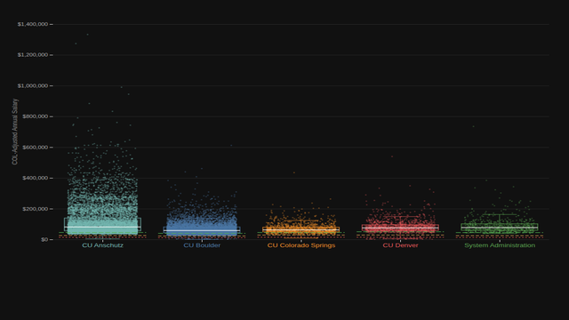
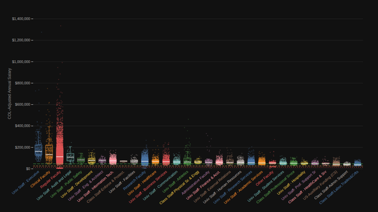
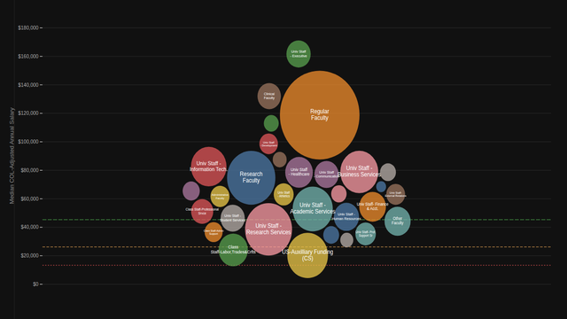
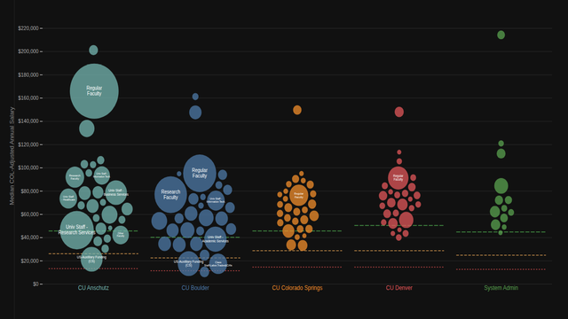

Every full-time (100% FTE) CU employee as a single dot, grouped by campus and positioned by annual base salary.

Every full-time CU employee as a dot, grouped by job family with box-and-whisker overlays. All campuses pooled and COL-adjusted.

Each job family as a bubble sized by system-wide headcount, positioned by median COL-adjusted salary across all campuses.

Job families for each campus arranged in columns, sharing a common salary axis for cross-campus comparison.